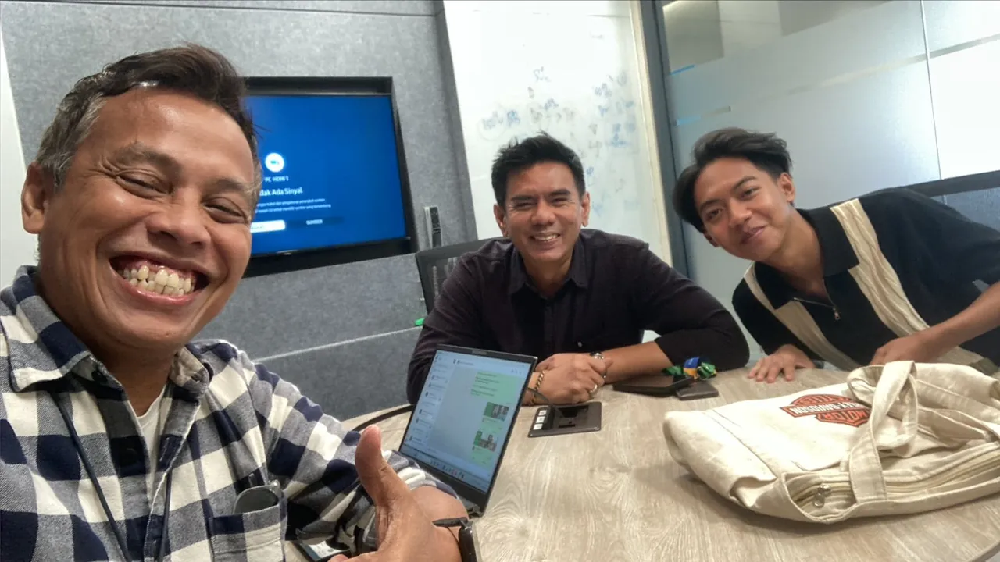
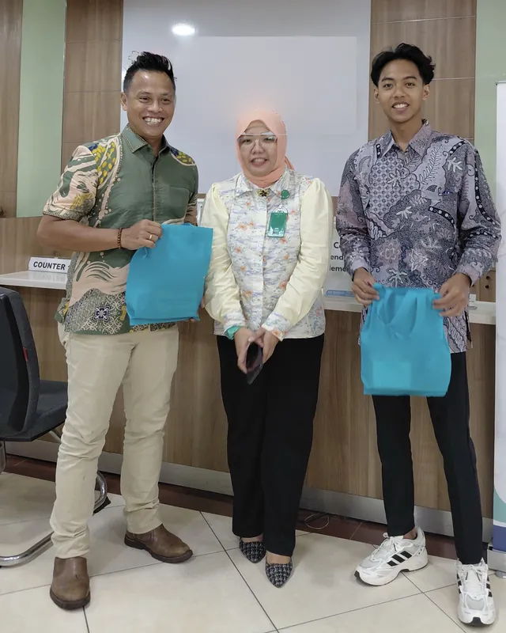
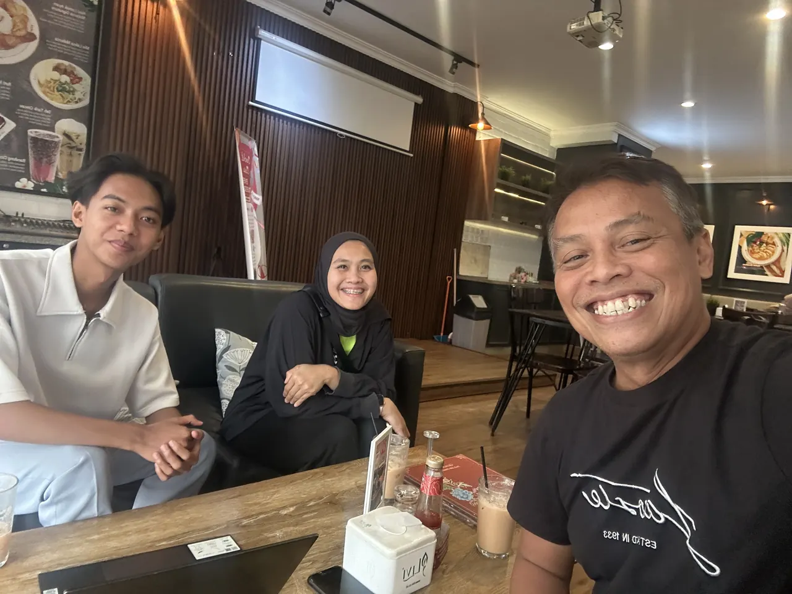
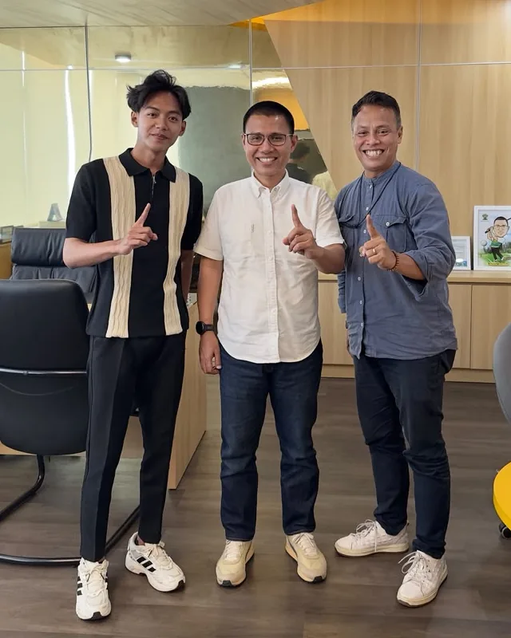
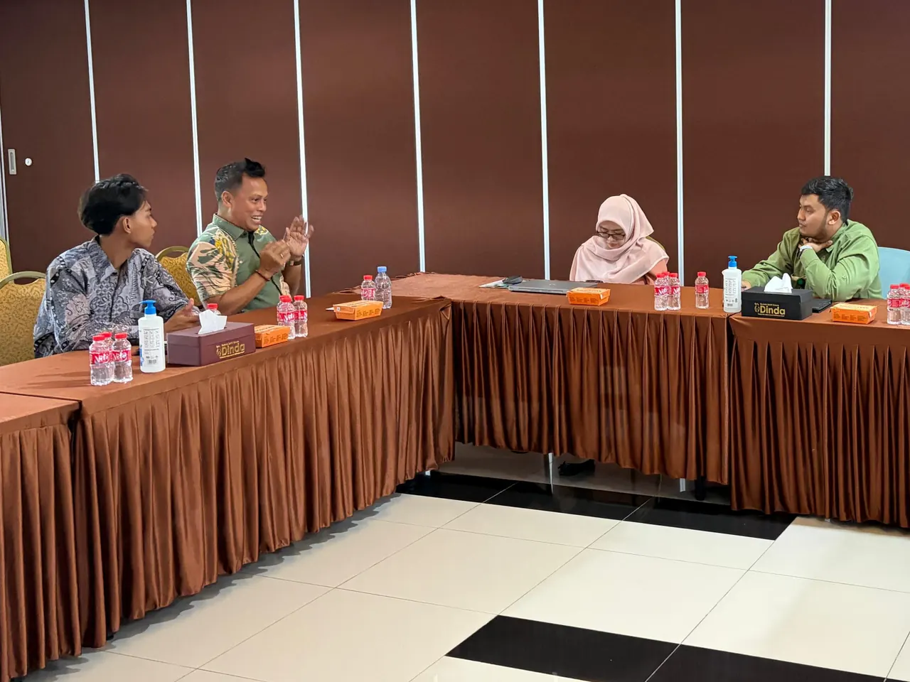
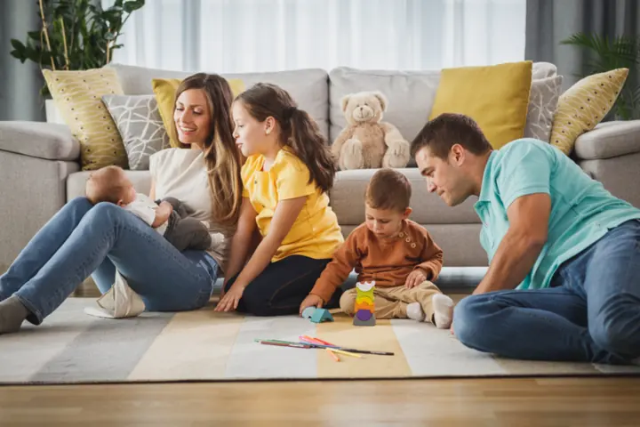

Perlindungan Kesehatan
Perlindungan kesehatan untuk membantu mempersiapkan diri menghadapi risiko biaya medis dan kebutuhan perawatan kesehatan.
Lindungi kesehatan, keluarga, dan masa depan finansial Anda.
Setiap orang memiliki risiko dan kebutuhan perlindungan yang berbeda. Kenali pilihan perlindungan yang dapat membantu Anda mempersiapkan diri menghadapi berbagai kemungkinan dalam kehidupan.

Arits Fauzi Irham
Konsultan Asuransi & Perlindungan Finansial
Momen bersama klien yang telah berdiskusi dan berkonsultasi dengan saya.





Saya percaya setiap keputusan perlindungan harus dimulai dari pemahaman, bukan tekanan.
Setiap individu memiliki kebutuhan berbeda. Saya mengutamakan solusi yang mempertimbangkan kondisi dan prioritas masing-masing.
Anda berhak mendapatkan penjelasan dan mempertimbangkan setiap pilihan tanpa tekanan untuk mengambil keputusan.
Komitmen saya tidak berhenti pada proses pengajuan, tetapi juga mencakup pendampingan pelayanan selama menjadi nasabah sesuai ketentuan.
Informasi mengenai manfaat, biaya, risiko, dan ketentuan disampaikan secara terbuka agar keputusan dibuat dengan pemahaman yang baik.
Pilihan perlindungan yang dapat disesuaikan dengan kebutuhan dan kondisi Anda. Rincian manfaat mengikuti ketentuan polis resmi dari perusahaan asuransi.
Perlindungan kesehatan untuk membantu mempersiapkan diri menghadapi risiko biaya medis dan kebutuhan perawatan kesehatan.
Perlindungan finansial untuk membantu menghadapi dampak ekonomi ketika seseorang didiagnosis penyakit kritis yang memenuhi definisi dan ketentuan polis.

Perencanaan perlindungan jiwa untuk menjaga keberlangsungan finansial keluarga ketika risiko kehidupan terjadi.
Diskusi mengenai perencanaan keuangan, kebutuhan proteksi, dan tujuan finansial jangka panjang.
Diskusi mengenai kebutuhan perlindungan bagi pemilik usaha, karyawan, dan keberlangsungan bisnis.

Hitung perkiraan kesenjangan proteksi jiwa dan penyakit kritis keluarga Anda hanya dalam beberapa menit. Gratis, dan data Anda tidak disimpan.
Coba KalkulatorEmpat langkah yang jelas, mulai dari memahami kebutuhan Anda hingga mendampingi pelayanan polis.
Memahami kebutuhan, kondisi, dan prioritas finansial Anda.
Mendiskusikan alternatif perlindungan yang relevan dengan kebutuhan Anda.
Menjelaskan manfaat, premi, risiko, pengecualian, dan ketentuan secara transparan.
Memberikan pendampingan dalam proses pelayanan polis sesuai kewenangan dan ketentuan perusahaan.
Rangkuman dari sumber tepercaya untuk membantu Anda memahami asuransi sebelum mengambil keputusan.
Cara kerja asuransi dan bedanya dengan tabungan, dirangkum dari materi OJK dan Bisnis.com.
Lihat rangkumanHak pemegang polis dan hal yang wajib dimuat setiap polis, dirangkum dari Hukumonline.
Lihat rangkumanTahapan klaim dan dokumen yang biasanya diperlukan, dirangkum dari Kompas TV dan Bisnis.com.
Lihat rangkumanSaya siap mendengarkan kebutuhan Anda dan menjelaskan pilihan yang tersedia dengan bahasa yang sederhana dan mudah dipahami.